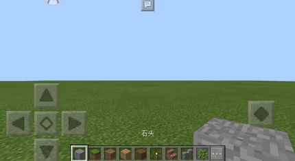
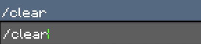
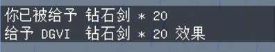
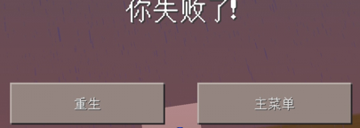
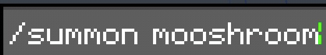
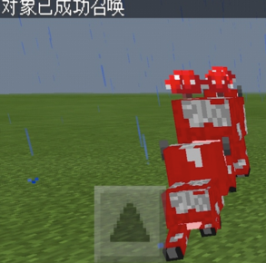

我的世界命令教程(国服手机端)
此教程由 手打制作
1-进入游戏，（注意必须开启作弊模式）如果你联机，你不是房主的话，有些命令是用不了的！
2-点开对话框，一般都在游戏界面的正上方中央。

3-如果你觉得背包东西很多的话，可以试下以下代码。
clear 清除对象目标物品
格式:/clear 目标 物品 数量

例子:/clear @a (清除所有玩家所有物品)
4-如果你想获得物品可以试一下下面的命令。
give 给予玩家物品
格式:/give 玩家 物品代码 数量
例子:/give @a diamond_sword 20 (给所有玩家20把钻石剑)

5-如果你想杀人,又找不到人的话可以试下面代码
kill 杀死某位玩家
格式:/kill 玩家
例子:/kill @a (杀死所有玩家，包括你自己)

6-如果你想召唤生物的话，你尝试下面代码
summon 召唤生物
格式:/summon 生物代码 数量
例子:/summon mooshroom (召唤蘑菇牛)


7-接下来是常用代码，看看你们有什么需要的。
/time set day 设置时间为白天
/time set night 设置时间为夜晚
/gamerule dodaylightcycle false 停止时间流动
/difficulty 0 设置难度为和平
/difficulty 1 设置难度为简单
/difficulty 2 设置难度为普通
/difficulty 3 设置难度为困难
/gamemode 0 设置模式为生存
/gamemode 1 设置模式为创造
/gamemode 2 设置模式为冒险
/weather clear 设置天气为晴天
/weather rain 设置天气为下雨
/weather thunder 设置天气为雷雨
/gamerule keepinventory true 死亡不掉落(强烈推荐)
/spawnpoint 设置当前位置为出生点(强烈推荐)
/effect @p night_vision 99999 0 给予无限时长夜视(强烈推荐)
/tp ~ ~ ~ 传送坐标(配合下面几个命令效果极佳)
/locate stronghold 定位末影要塞
/locate endcity 定位末影城
/locate mansion 定位丛林府邸
/locate fortress 定位地狱堡垒
8-正在更新中。。。